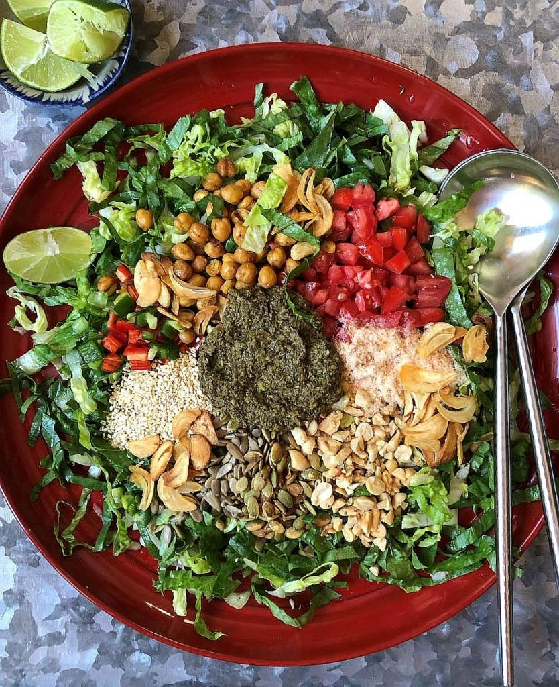

Tea Leaf Salad

Description
Tea Leaf Salad (Lat Phat Tote) is one of the traditional side dish for Burmese people.
People love to eat with some tea
It is also a traditional to treat guests with tea leaf salad at home especially in some villages
Ingredients
- Tea Leaf
- Fried Garlic
- Dried Shrimp
- Garlic
- Fried Bean
- Fish Sauce
- Tomato
- Bean Oil
- Chilli
Steps
- To make the dressing, steep the tea leaves in hot water for 3 minutes. Drain well, pressing out excess
water.
- Cool the leaves to room temperature.
- In a small food processor, whirl the garlic, ginger, and salt to a minced state.
- Add the tea leaves and whirl to a fine texture
- Add the oil, vinegar, and fish sauce, then pulse to combine. You should have a scant ½ cup.
- To assemble salad, make a bed of lettuce on a rimmed serving platter
- Drizzle on the fish sauce or sprinkle on the salt
- Like flower petals, arrange piles of tomatoes, chile, fried garlic, peanuts, roasted chickpeas, sunflower
seeds, sesame seeds, and shrimp powder.
- Scrape the dressing into the center.
- At the table, squirt on half of the lime wedges and toss the salad. If diners want more tartness, let them
add extra lime juice.